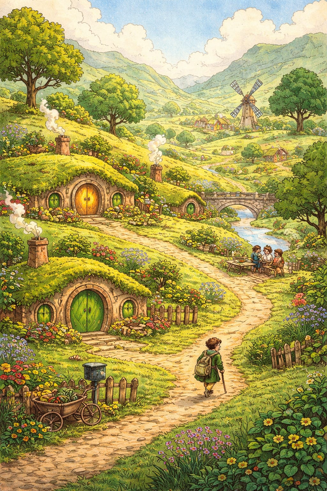
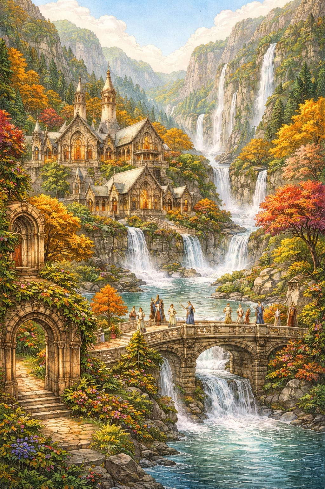
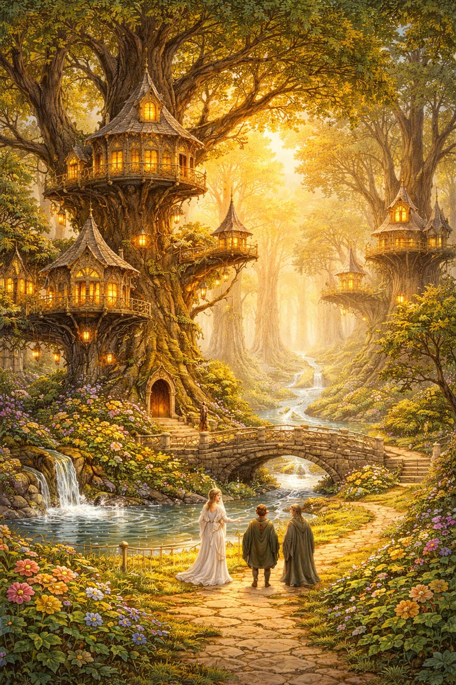
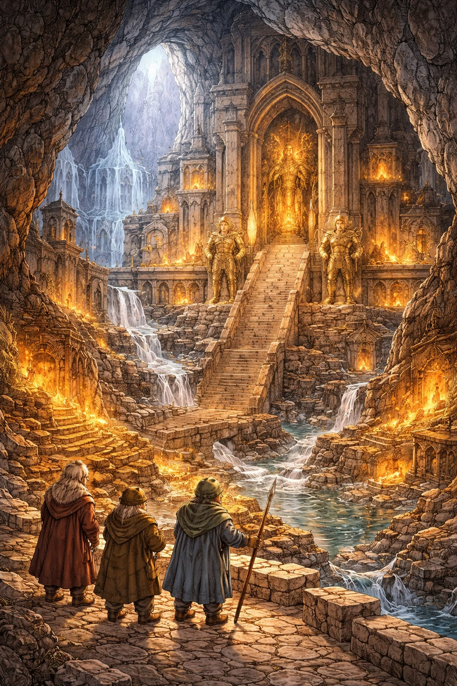
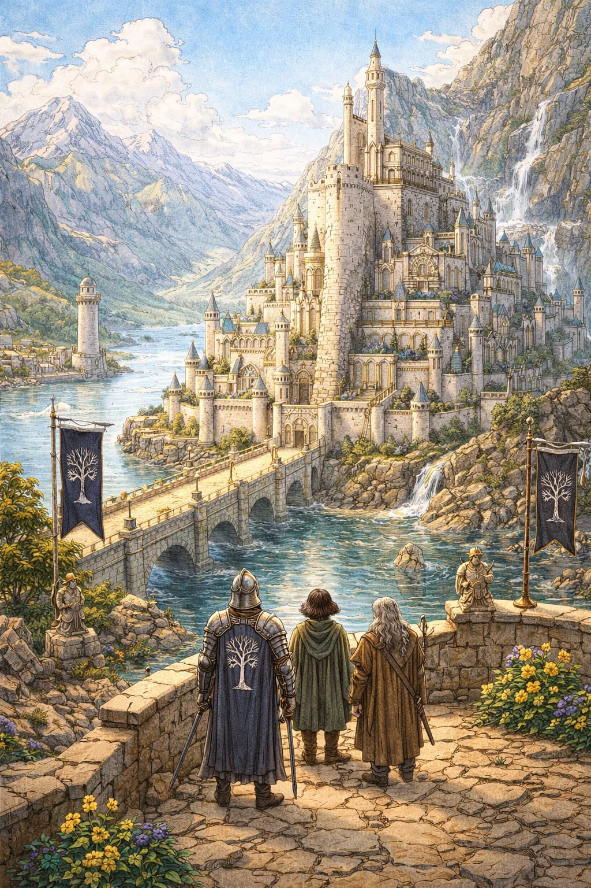
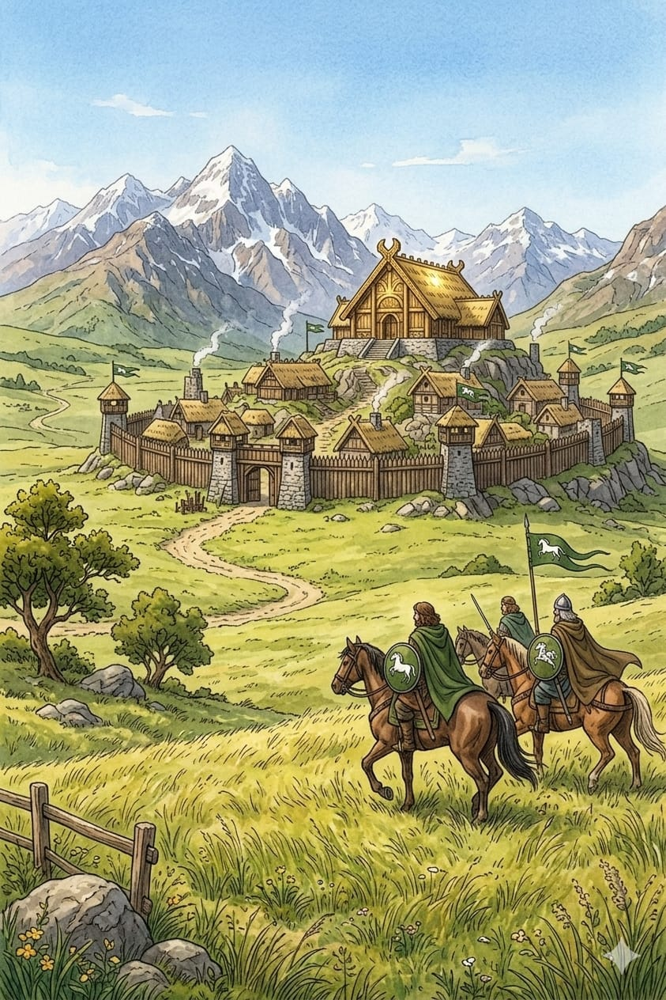
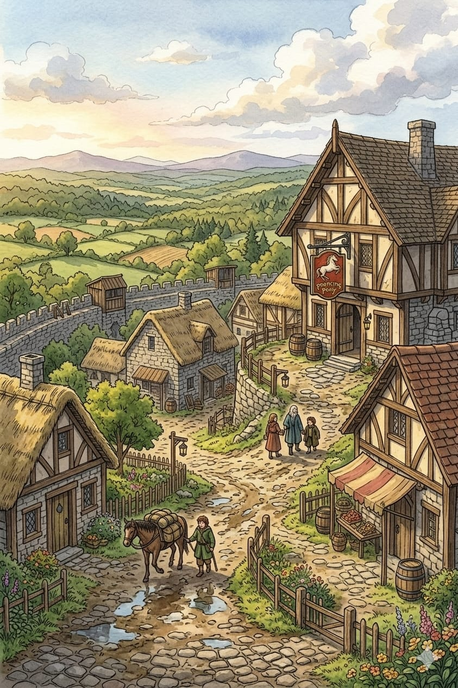
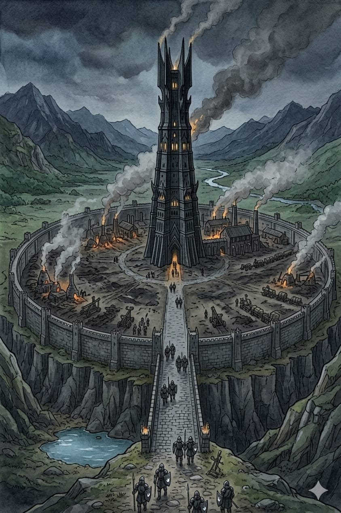
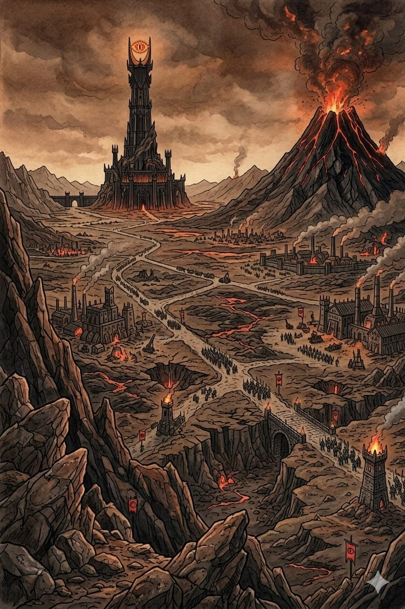

Mapa da Terra Média
Principais regiões
Condado
Habitat: Planícies verdes, colinas suaves, rios tranquilos.
Habitantes: Hobbits, pacíficos, gostam de agricultura, festas e boa comida.
Cultura: Vida simples, comunidade forte, sem interesse em guerras.
Curiosidade: Hobbits raramente saem do Condado, e todos têm nomes típicos como “Frodo” ou “Samwise”.

Valfenda
Habitat: Vale escondido, cercado por montanhas e rios, natureza exuberante.
Habitantes: Elfos, sábios e longevos.
Cultura: Centro de conhecimento e diplomacia, refúgio para viajantes.
Curiosidade: Governado por Elrond; lugar onde a Sociedade do Anel foi formada.

Lothlórien
Habitat: Floresta encantada com árvores douradas e rios limpos.
Habitantes: Elfos élficos liderados por Galadriel e Celeborn.
Cultura: Vida tranquila, ligada à magia e à natureza; forte senso estético.
Curiosidade: Temporada eterna de outono, difícil de ser encontrado por invasores.

Erebor
Habitat: Montanha rica em minérios, cavernas e rios subterrâneos.
Habitantes: Anões, especialistas em mineração e metalurgia.
Cultura: Comerciantes, guerreiros e artesãos habilidosos.
Curiosidade: Foi ocupada pelo dragão Smaug por muito tempo; depois reconquistada pelos anões.

Gondor
Habitat: Reinos fortificados, cidades grandes (Minas Tirith), colinas, rios.
Habitantes: Homens nobres, soldados, artesãos.
Cultura: Sociedade hierárquica, guerreira, leal ao trono de Númenor.
Curiosidade: Centro estratégico contra Mordor; Minas Tirith tem 7 níveis de muralhas.

Rohan
Habitat: Planícies extensas, pastagens, rios e colinas baixas.
Habitantes: Homens conhecidos como Rohirrim, grandes cavaleiros e criadores de cavalos.
Cultura: Sociedade guerreira, amor pela cavalaria, simplicidade e lealdade.
Curiosidade: Governada por um rei; famosa por cavalos fortes e tropas montadas.

Floresta das Trevas
Habitat: Floresta densa e escura, com rios e áreas perigosas.
Habitantes: Elfos da floresta (Thranduil) e criaturas perigosas (aranhas gigantes, orcs esparsos).
Cultura: Isolada, protetora, com hierarquia de elfos da floresta.
Curiosidade: O leste da floresta era infestada de escuridão por influência de Sauron.

Bree
Habitat: Vila pequena, rodeada de campos e florestas.
Habitantes: Homens e Hobbits convivendo juntos.
Cultura: Comércio local, taverna famosa (Pônei Saltitante).
Curiosidade: Ponto de encontro de viajantes, importante para notícias e eventos de Gandalf/Frodo.

Isengard
Habitat: Torre cercada por planícies, rios e bosques.
Habitantes: Homens e orcs quando ocupada por Saruman.
Características: Centro industrial e fortaleza, estratégica para eventos da guerra.
Curiosidades: Originalmente era pacífica, mas Saruman transformou em fortaleza; famosa pela torre de Orthanc; tornou-se centro de criação de orcs e armamentos.

Mordor
Habitat: Terra vulcânica e árida, montanhas, lava.
Habitantes: Orcs, trolls e servos de Sauron.
Características: Terra do mal, com Barad-dûr e Monte da Perdição, cheia de perigos.
Curiosidades: Lar de Sauron e do Um Anel; possui o Monte da Perdição; território inóspito com vulcões e desertos de cinzas; cercado por montanhas, difícil de entrar sem ser detectado.
